DARK-WEB SITES
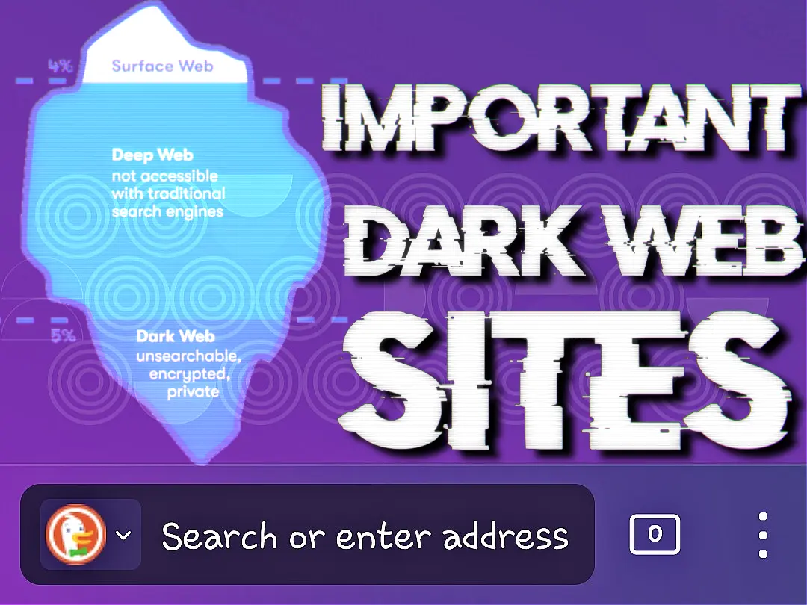I created a list of most useful and important websites on dark web. This is page is created for beginners who want to try dark-web but don't know what to search and which site is trusts. I also add my opinion on every site so that you can understand the purpose of site and surf the dark web with out worry.
1. THE HIDDEN WIKI
The Hidden Wiki was a dark web MediaWiki wiki operating as a Tor hidden service that could be anonymously edited after registering on the site. The main page served as a directory of links to other .onion sites.The Hidden Wiki is one of the oldest link directories on the dark web. Famous for listing all important .onion links. Here is original and oldest hidden wiki.
THE HIDDEN WIKI
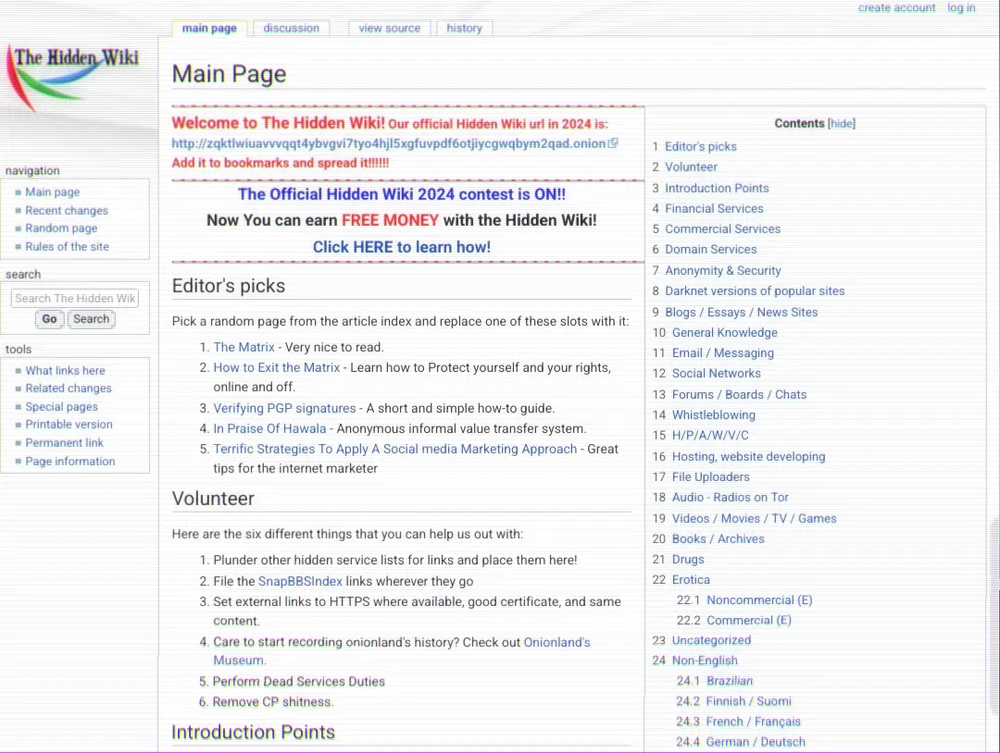Here is the original and oldest hidden wiki site. This site is on dark web.
The hidden wikiTHE HIDDEN WIKI (on surface-web)
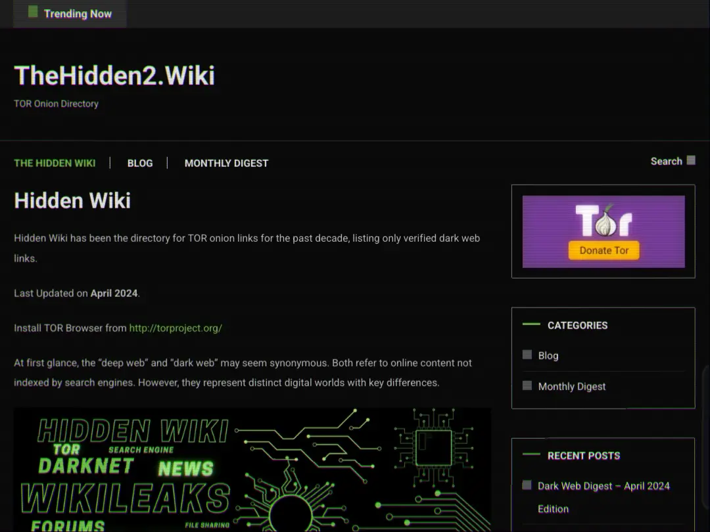There are lot of web sites on the surface web with title hidden wiki which provide dark website links.some of them are linked below.
Thehiddenwiki2 thehiddenwiki.orgTHE HIDDEN WIKI - 2024
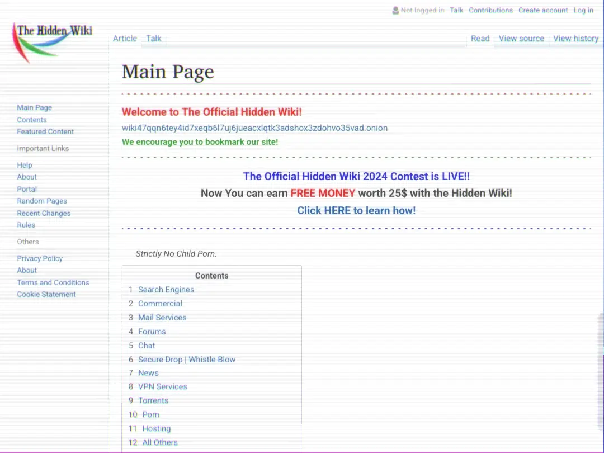This hidden wiki is on dark web & it look like original hidden wiki you can also use it.
The hidden wiki-2024THE ULTIMATE HIDDEN WIKI
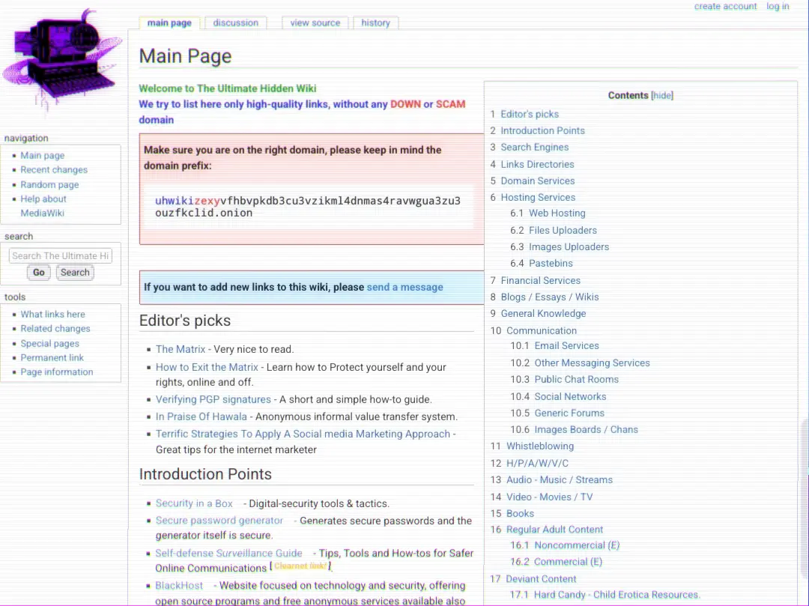Ultimate Hidden wiki, this site offers high quality links, without any Down or Scam domain. you can use it
Ultimate Hidden wiki2. SOCIAL MEDIA & CHAT
- There are lots of web sites on Dark web which offers you a platform. To talk to people and share your opinion on dark web.You can talk there very freely.But you have to be aware of bad people on dark web and never give your information to anyone.Here are social media and chat sites you can use on dark web.
DREAD
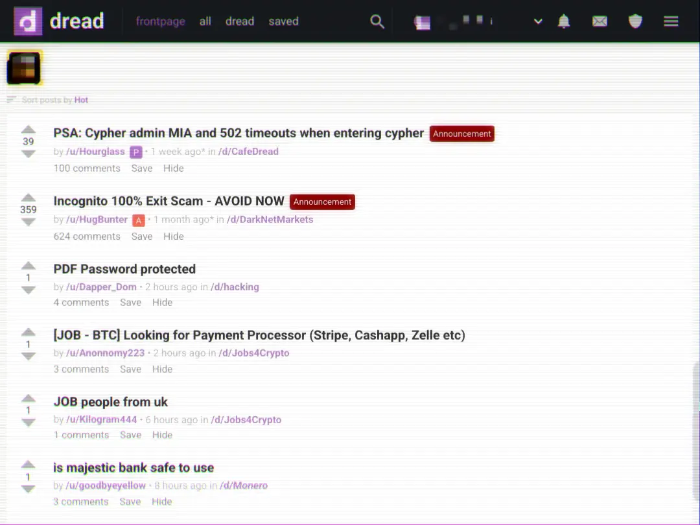Dread is redit of dark web.It has lots of subdreads like subredit.but offers lot of privacy and strict rules to stop scammers. Dread
ABLEONION
You chat with randoms on Ableonion, it also have groups on with you can dicuss with random people on random topics. but you have to be aware of scammers and hackers and they don't have strict rules.You can try this on your own risk.
ableonion3. READING MATERIALS
- There are lots of sites on dark web on which you can read comics.you can also read books which are ban in your country but you have to find that book.
COMIC BOOK LIBRARY
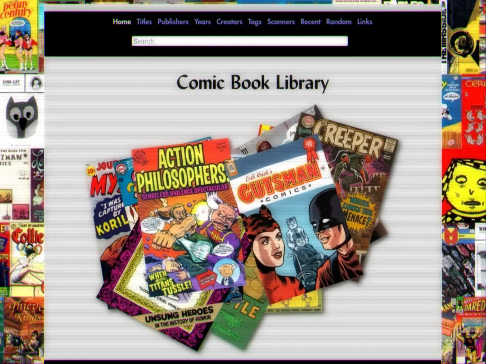You can read comics on Comic book library.It have total 3383 comics.
comic book libraryJUST ANOTHER LIBRARY
This web-site has large library of reading books on different books if you are reading lover you will love this site. This website also upload latest books.
just another libraryRELATED LIST
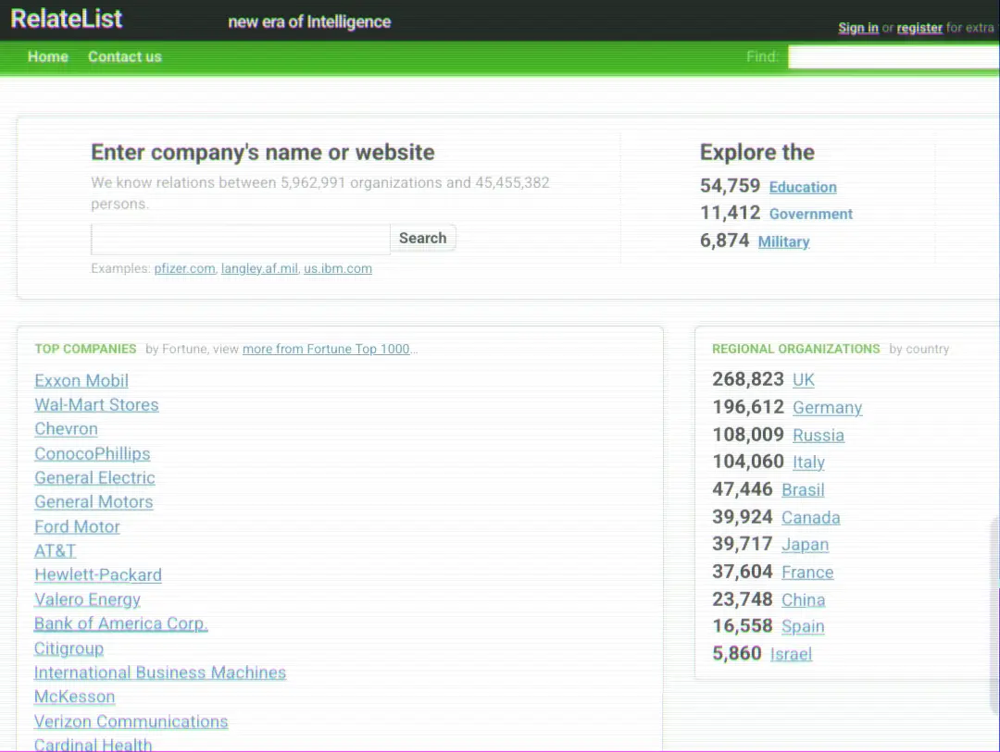Relatelist.com is the special search engine for Bussiness intelligence.
It research published in Internet documents on almost all web-sites.
Actually it know more than 45 million people from about 6 million companies.
With Relatelist.com you may see another side of corporate world. Use it to discover the real relationship between big and small companies, goverments, media and military agencies, intelligence service, banks, interenational organisations etc.
4. NEWS
- In some countries media is not that strong thats why some media companies released dark web verison of their website.
THE NEW YORK TIMES
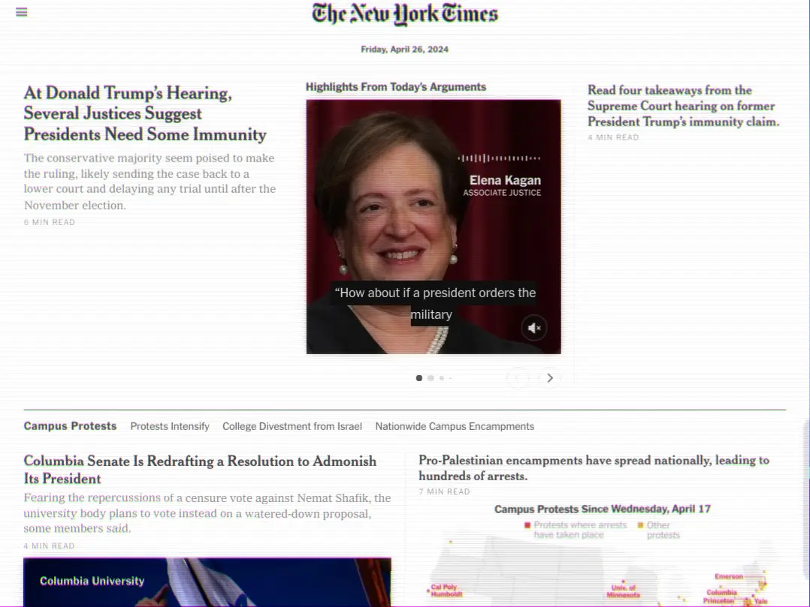This is the official dark-web version of The new york times.
the new your timesBELLINGCAT
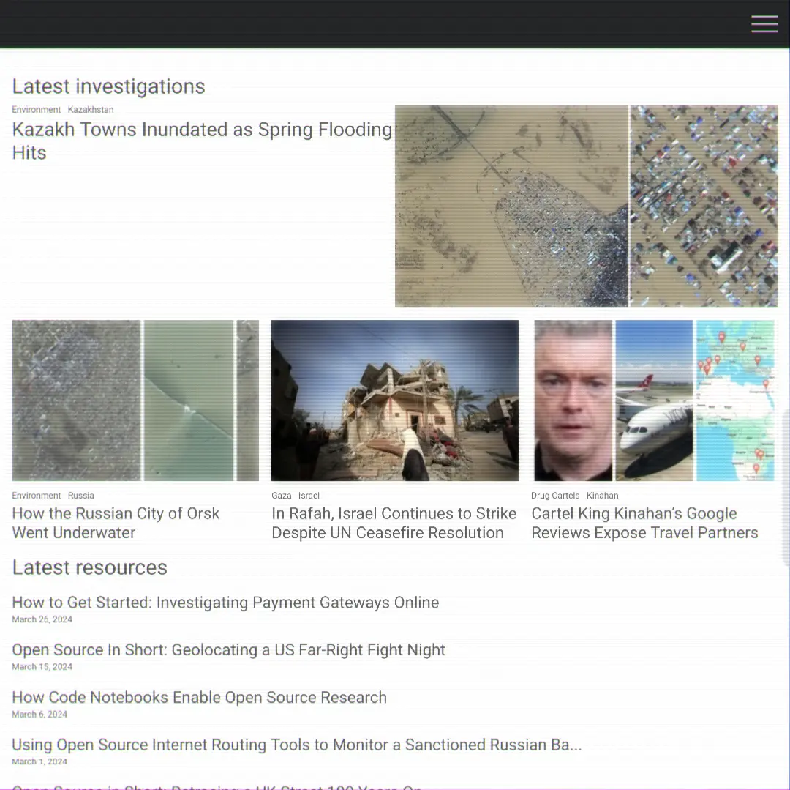Bellingcat is a Netherlands-based investigative journalism group that specialises in fact-checking and open-source intelligence.The dark web version of Bellingcat is below.
bellingcat5. MAILING SERVICES
- There are lot of sites that provide anonymous and private communication.
6. TRADING & STOCK
- If you are intrested in trading stuff then this site is for you.
THE STOCK INSIDERS
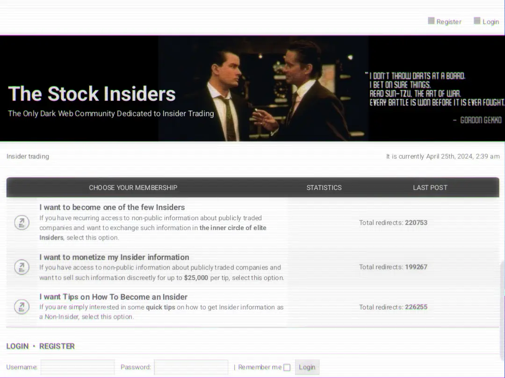The stock insiders claim that this is the only community dedicated to insider Trading.you can try this.
the stock insiders